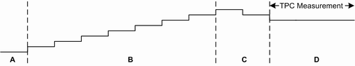
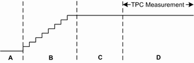

The conformance test specification 3GPP TS 34.121 defines the test in section 5.2B "Maximum Output Power with HS-DPCCH and E-DCH". The test verifies the maximum UE power with active HS-DPCCH and E-DCH. The test comprises five subtests with different signal configurations. The test procedure is common for subtest 1 to 4 and differs for subtest 5.
The test procedure for subtest 1 to 4 requires a dynamic TPC pattern, reacting to the E-TFCI received from the UE. The basic test procedure is as follows:
Set the initial UE power to be at least 7.5 dB lower than the maximum UE power.
Increase the UE power via TPC commands until the UE sends a decreased E-TFCI. Use algorithm 2. Check the E-TFCI after each +1 TPC_cmd (11111 pattern).
Decrease the UE power via a single -1 TPC_cmd (00000 pattern, algorithm 2). If the UE still sends a decreased E-TFCI, repeat the -1 TPC_cmd once.
Check that the UE sends the expected target E-TFCI (for subtest 1 to 4: 75, 67, 92, 71). If the UE cannot reach the target E-TFCI, the UE fails the test.
Keep the power constant (alternating pattern, algorithm 2). Measure the UE power (mean value over at least one slot).
The progress of the test can be monitored via the displayed TPC state, target E-TFCI and monitored E-TFCI as listed in the legend of the following figure.

The test procedure for subtest 5 requires only a static "All 1" TPC pattern. The basic test procedure is as follows:
Set the initial UE power to be at least 7.5 dB lower than the maximum UE power.
Send an "All 1" TPC pattern, using algorithm 1.
When the UE reaches the maximum power, the signaling application monitors the sent E-TFCI for 150 ms.
Measure the UE power (mean value over at least one slot).
The progress of the test can be monitored via the displayed TPC state, target E-TFCI and monitored E-TFCI as listed in the legend of the following figure.

The signal configurations defined by 3GPP for the individual subtests are complex. For comfortable configuration, a wizard is provided. You can configure all settings for a specific subtest by simply selecting the subtest and pressing a button.
3GPP defines tolerances for the measured maximum UE power. The following table provides an overview of the requirements. You can configure both the nominal maximum power and a pair of tolerance values via the limit settings of the TPC measurement.